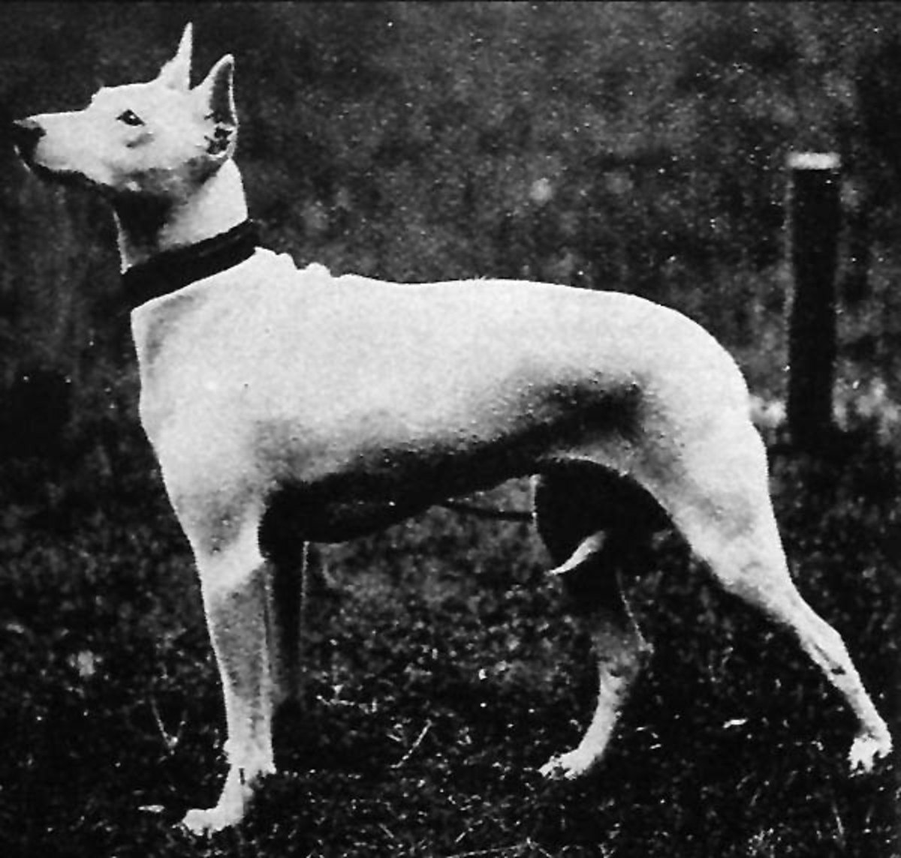

Уникальная внешность
Яйцевидная форма головы считается визитной карточкой породы
Формула бультерьера
Порода была выведена в Англии в XIX веке заводчиком Джеймсом Хинксом. Он скрестил староанглийского бульдога, белого английского терьера и далматина, чтобы получить идеального охотника на крыс и бойца. Впервые белоснежного бультерьера представили на выставке в 1862 году, после чего собака стала аристократическим символом.
Современный бультерьер значительно отличается от своих предков. Сегодня это прежде всего собака-компаньон, ориентированная на общение с человеком и жизнь в семье.

Яйцевидная форма головы считается визитной карточкой породы
Бультерьеры хорошо обучаются и быстро осваивают новые команды
Порода нуждается в регулярных прогулках и физических нагрузках
Первые эксперименты по созданию новой породы
Формирование внешних признаков бультерьера
Порода становится известной во многих странах
Из собаки-убийцы бультерьер превратился в любимца семьи, который ценится за преданность, дружелюбие и интеллект.
Собака сильно привязывается к хозяину и любит находиться рядом с семьёй
Бультерьеры обладают смелым характером и хорошо чувствуют себя в новых условиях
Даже взрослые собаки сохраняют любовь к активным играм и развлечениям
При правильной социализации прекрасно взаимодействуют с людьми, вопреки стереотипам